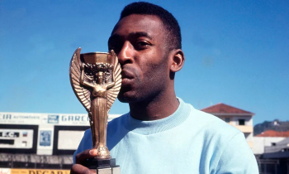
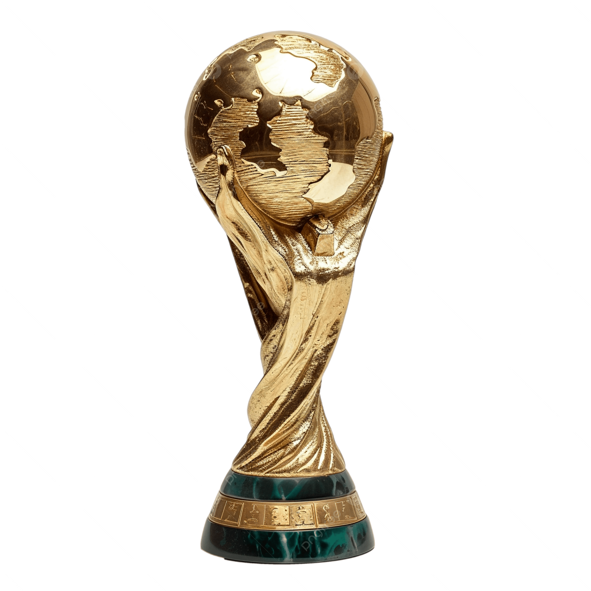
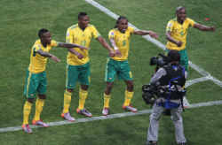

World Cup History
The FIFA World Cup has a long history and has become one of the most important tournaments in sports.

Previous Champions
Many national teams have won the tournament and created unforgettable moments for their countries and fans.

Memorable Moments
World Cup history includes legendary players, dramatic matches, and celebrations remembered around the world.
